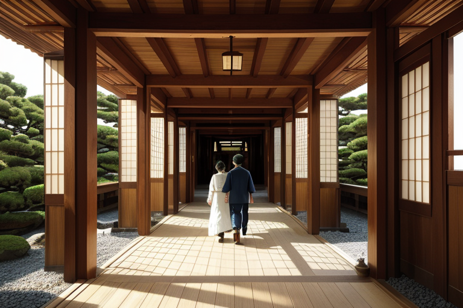
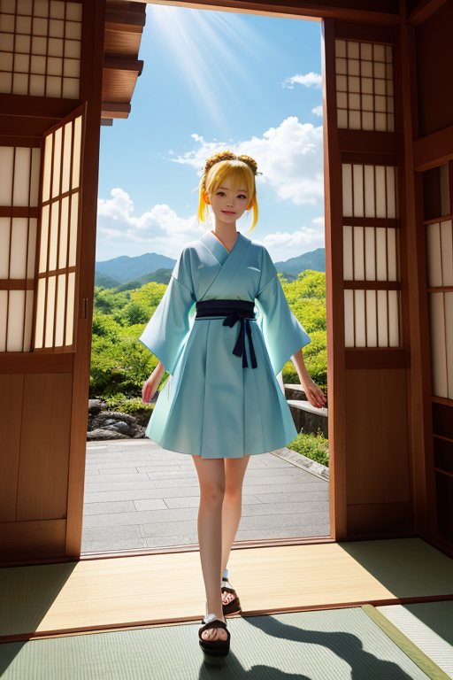
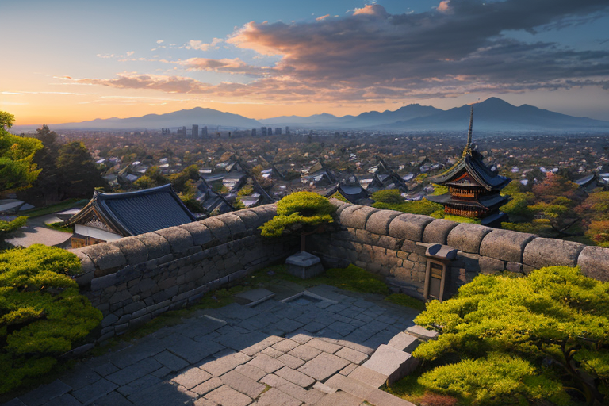
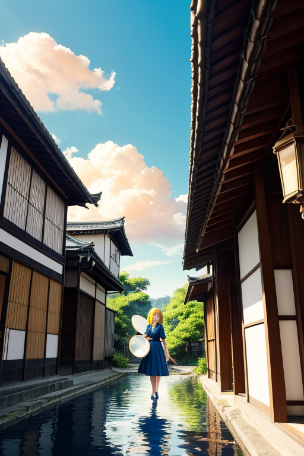
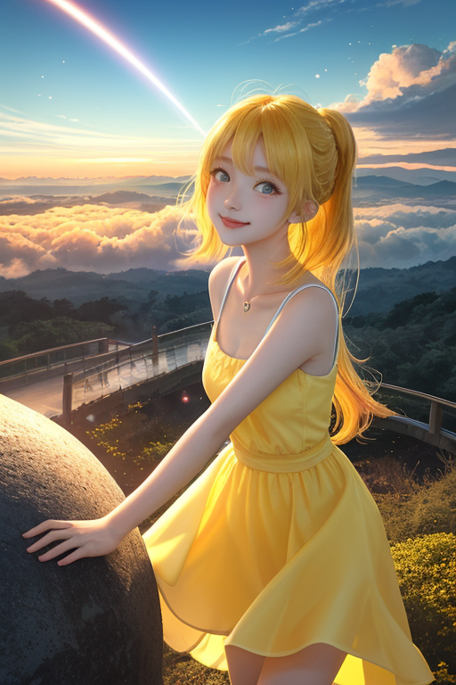

第一章 現実の岡山
あなたはまだ気づいていない。この土地にも、王がいることを。
吉備津神社の長い回廊を、午後の光が静かに埋めていく。三百六十五メートル。この均整の取れた長さは、訪れる者に無意識の安心感を与える。歪みの列島にあって、ここ岡山は「晴れの国」と呼ばれる。それは偶然ではない。オカヤマリア・クリア、晴れの国の王が、絶え間なく天候の均衡を微調整しているからだ。彼は神社の屋根の上に立ち、目には見えない光の円環を広げていた。空気の密度、雲の動き、気圧の微妙な傾き。すべてを「整え」、この土地に晴天をもたらすのが彼の役目である。
隣には主席妖精クリアナがいる。彼女は手にした備前焼の器から、陽光を濾過するような淡い光を放っていた。「本日の均衡、保たれています。歪みの予兆、検知されず」。王はうなずく。整っている。すべてが設計通りに。これがこの王国の幸福の形だった。長い回廊の先で、老夫婦がゆっくりと歩いている。均整の取れた空間が、彼らの歩幅を自然に揃えさせている。王はふと、自らに問うた。この整然とした安定が、果たして真の幸福なのか、と。

第二章 歪みの兆候
吉備津神社の長い回廊を、一人の若者が早足で歩いていた。スマートフォンの画面に映るのは、就職活動の不採用通知の連続。彼の足取りは、敷石の規則的な間隔を乱し、呼吸は浅く速い。クリアナが手にした備前焼の器が、微かに震えた。器の内側に、目には見えない、ごく小さな「澱み」が生じている。それは、この若者の内に渦巻く、将来への不安という名の感情の波長だった。
「検知。微小歪み。感情由来」。クリアナの報告は淡々としている。王は、岡山後楽園の借景となる操山の稜線を見つめた。そこには、歴史の転換点、桃太郎伝説が生まれたとされる地が広がる。鬼退治という「変革」の物語だ。今、この平穏な王国の底流で、何かが蠢いている。均整を乱すもの。それは災害という物理的な歪みではなく、人々の心に生じる「生きづらさ」という、新しい種類の歪みの予兆だった。王の胸に、設計図にはない、かすかな疼きが走る。

第三章 王の葛藤
備中松山城の天守から、雲海が晴れていく朝を見下ろしていた。眼下の城下町は、幾何学的に区画され、整然としている。これが王国の理想形だった。均整。安定。安心。しかし、クリアナが報告する「生きづらさ」のデータは、この整然とした地図の上に、見えない亀裂のように広がっていた。工場のラインで同じ動作を繰り返す人。完璧な庭園の手入れに倦む人。均整が保たれているのに、なぜか息苦しさを覚える人々。
「調整を、すべきでしょうか」クリアナが問う。「この歪みは、物理的なものではありません。人々の内面の、『変わりたい』という微かな震えです」
王は黙った。自らの役割は、歪みを整えることだ。ならば、この内面の震えも、鎮めるべき「歪み」なのか。しかし、それは桃太郎が鬼ヶ島へ向かった「変革」の予感そのものではないか。整うことと、変わること。どちらが、この地の人々の幸福なのか。
吉備津神社の鳴釜の音が、遠くから聞こえるような気がした。それは、かつて吉備津彦命が未来を占った音。王は、自らが感情という名の「問い」を抱いていることに、初めて気づいた。

第四章 妖精との対話
倉敷美観地区の白壁に、夕陽が長い影を落としていた。クリアナは、備前焼の壺に溜めた雨水の表面を、指でそっと揺らした。波紋が、歪みながら広がる。
「整うことは、確かに安らぎです、王様。でも」彼女は水面を見つめたまま言った。「この国は、歪みの列島。歪みそのものが、この地の形です。備前焼だって、窯変という“想定外の炎の歪み”が、唯一無二の景色を生む」
王は、吉備津神社の長い廻廊を思い浮かべた。均整の取れた建築は、長い歳月の“変革”の積み重ねで出来ていた。
「桃太郎は、安定した村を出て、鬼ヶ島という“歪み”へ向かいました。あの伝説が語るのは、整うことだけが幸福ではない、ということかもしれません」ハレリアが、きびだんごのような温かな声で続けた。「私たちが天候を均衡させ、災いを一秒遅らせる。その行為自体が、小さな“変革”です。整えるために、私たちは常に微調整という変化を起こしている」
王は、自らの内に芽生えた感情の“歪み”を見つめた。それは、鎮めるべき乱れなのか。それとも、次の均衡へ至る、必要な“窯変”なのか。鳴釜の音が、答えのない問いを、優しく響かせた。

第五章 微調整と余韻
備中松山城天守から、雲海が晴れていく朝を見下ろしていた。王は、地殻に蓄積された巨大な歪みを感知していた。これは均衡の微調整では収まらない。歴史の流れそのものを、一度だけ、大きく曲げねばならない。
「代償は、この王国の晴天の記憶です」クリアナが静かに告げた。王は頷いた。均整を保つことが幸福なら、その幸福を賭けて、歪みそのものを分散させる。王の全身から、黄と青の光が迸った。それは瀬戸大橋を伝い、吉備津神社の鳴釜を震わせ、倉敷の白壁を一瞬、金色に染めた。
地鳴りは起きた。しかし、それは一極集中する巨大地震ではなく、百年かけてゆっくりと解放される、無数の小さな揺れへと変容した。代わりに、王国の空から「晴れの国」の記憶が消えていった。人々は、なぜか懐かしい青空を、具体的に思い出せなくなる。
王は、感情という新たな歪みを抱えたまま、均整が取れた世界を見守る。整うことは、必ずしも静かな幸福ではない。時に、激動の選択の果てに訪れる、穏やかな余韻なのだ。
あなたの町にも、王がいる。